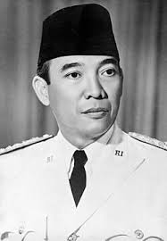

Ir. Sukarno (6 Juni 1901 – 21 Juni 1970), dikenal juga dengan sapaan Bung Karno, adalah seorang negarawan, orator, dan Presiden Indonesia pertama yang menjabat sejak tahun 1945 sampai 1967. Ia menjabat sebagai presiden setelah memproklamasikan kemerdekaan Indonesia bersama wakilnya, Mohammad Hatta. Selain dikenal sebagai "Bapak Proklamator", Soekarno dikenal juga sebagai pencetus Pancasila, dasar negara dan ideologi bangsa Indonesia.
Setelah Era Demokrasi Liberal Indonesia atau demokrasi parlementer, Soekarno mendirikan sistem otokrasi yang disebut "Demokrasi Terpimpin" pada tahun 1959. Pada awal tahun 1960-an Soekarno memulai serangkaian kebijakan luar negeri yang agresif dengan tajuk anti-imperialisme dan secara pribadi memperjuangkan Gerakan Non-Blok. Perkembangan ini menyebabkan meningkatnya ketegangan dengan Barat dan hubungan yang lebih dekat dengan Uni Soviet. Setelah peristiwa seputar Gerakan 30 September tahun 1965, jenderal militer Soeharto mengambil alih kendali negara dalam penggulingan pemerintah yang dipimpin Soekarno oleh militer yang didukung Barat. Hal ini diikuti oleh penindasan terhadap kaum kiri yang nyata dan yang dianggap beraliran kiri, termasuk eksekusi terhadap anggota partai Komunis dan orang-orang yang diduga bersimpati pada beberapa pembantaian dengan dukungan dari CIA dan SIS,
Kembali Ke Beranda